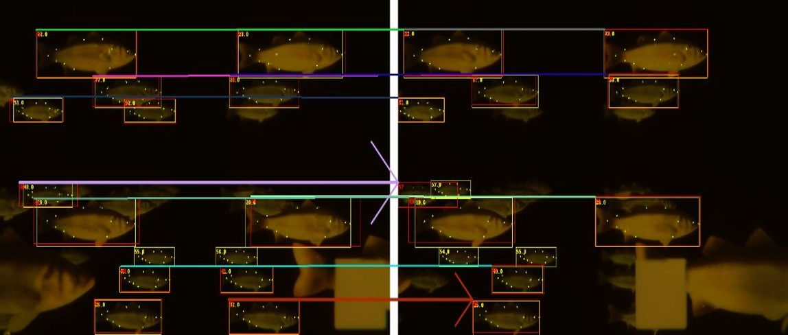

AI powered Fish Size Measurement
We developed a computer vision system to measure fish size from stereo camera data. Our method achieves accurate size estimation while being efficient enough for real-time deployment in aquaculture settings.
Problem Statement
Fish size measurement is critical for aquaculture management, but traditional methods are labor-intensive and error-prone. The size of fish can act as a proxy for health and growth, and accurate measurements can help optimize feeding schedules.
Method Overview
Faster R-CNN based object detection for fish localization, followed by a top-down pose estimation module to identify keypoints on the fish body using HR-Net and Hourglass models.
Visual Results

Fish association across frames
Ground Truth Comparison
Failure Case
Feature Visualization
Quantitative Results - Object Detection
mAP values for object detection methods on our dataset with Faster R-CNN-R50 and R101 backbones.
| Method | mAP | AP50 | Image Size |
|---|---|---|---|
| Faster R-CNN-R50 | 77.20 | 85.80 | 1280x720 |
| Faster R-CNN-R101 | 78.50 | 86.00 | 1280x720 |
Quantitative Results - Pose Estimation (top-down)
AP values for pose estimation methods on our dataset with HRNet-32 and Hourglass-52 backbones.
| Method | AP | AP75 | Image Size |
|---|---|---|---|
| HRNet-32 | 75.31 | 94.77 | 384x288 |
| Hourglass-52 | 65.40 | 81.71 | 256x256 |
Quantitative Results - Fish association for Stereo Matching
Precision and Recall values for fish association across left and right frames on our dataset.
| Method | Precision | Recall |
|---|---|---|
| Best-Match | 81.36 | 77.38 |
| Minimum Cost Assignment | 90.19 | 82.31 |
Quantitative Results - Length measurement Errors
Length measurement errors for different methods of depth estimation at keypoints. We use ground-truth depth and estimated depths at the keypoints to calculate the errors.
| Method | Error (cm) |
|---|---|
| Predicted Keypoints + GT Depth | 1.2 |
| Predicted Keypoints + Estimated Depth | 17.5 |
| Predicted Keypoints + Estimated Depth (Disparity >= 50px) | 1.6 |
- Underwater object detection and pose estimation.
- Keypoints from pose estimation used for stereo matching.
- Depth estimation at keypoints and length measurement.